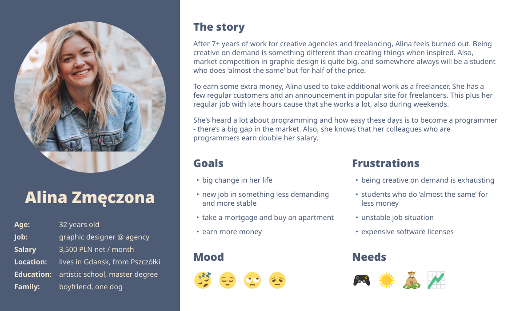
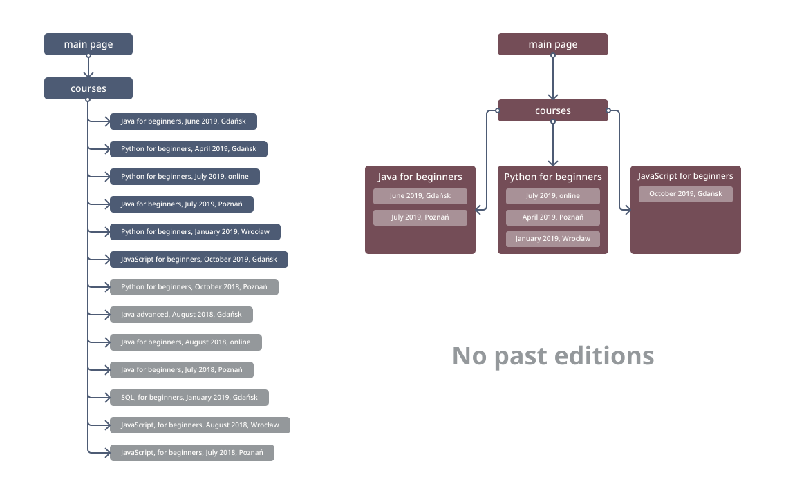

Programming school webpage
Content:
CODE:ME started as one programming language course. Through the past 4 years, it’s grown to a real company with a much bigger offer but there is no place for all its products.
As a co-owner of this small company, I was responsible for many things including improving customer experience and the team efficiency in our everyday tasks. I've discovered that in those two fields we have a lot to improve with our webpage.
Project details
Design goals
- Simplify information architecture of the page to fix users’ problems with navigating and information seeking
- Simplify the process of updating to help the CODE:ME team
- Create a space for all company products and a dedicated place for knowledge sharing - a blog
- By redesigning information hierarchy and page structure, fix problems with e.g. indexing outdated information by search engines
Nice to have:
- Redesign the page to create the complex tool for future, present and past clients/participants, not only digital leaflet with purchase buttons
My role(s)
- Inside company: gathering data from users, redesign information architecture
- Coordinating outsourced graphic design process
- Helping in communication with developers
Tools used
- Research: industry research and competitive audit, interviews with users (internal and external), workshops with CODE:ME team and developers, Hotjar (heatmaps and recordings), Google Analytics
- Ideation: pen, paper and post-its, site maps, user flow charts, user journey maps
- Interaction design + testing: paper page mockups, Illustrator, Figma
Problem seeking
We knew that our page isn’t perfect. But it wasn’t enough to decide on changing it. We needed to know if this would be an investment or money lost. So my first task was to find if the webpage as the main communication and purchase channel lowers sales and disturb achieving business goals. To find it, I’ve decided to look close to how customers use the page and ask the team how using the page influence effectiveness in their everyday work.
Quick look
Firstly, there was a problem with googeling our page. When I've talked with our customer service specialist, she told me that some clients ask about outdated information. I also saw this in Google Analytics - they entered past courses' editions pages from search results.
Secondly, the task 'page update' was a punishment for all of us. The numbers of clicks and possible mistakes doing this became insane. At the beginning wasn't that bad, when we have only a few courses per year!
Thirdly, customers' behaviour on a page was... interesting! I've watched tones of Hotjar's recording and heatmaps to realize that:
- people click uninteractive elements,
- they also don't click clickable interactive elements,
- they scroll a lot, don't read at all and miss headers so they enter pages with information about past company's activity.
I knew that wasn't their fault. That's why I watched it with a blush on my face and was taking notes 'what went wrong’ and ‘what to avoid in the future'.
Interviews with clients
I had an opportunity to interview past, current and potential customers about the page and they confirmed that we have room to improve.
-
Courses' graduate, an event for graduates:
'I've used to your page and now I can find what I want but I prefer to use Facebook, you know, it's easier...' -
Courses' current participant, after first classes:
'I had to call you to ask about a few things, then found it on the page. That was a little embarrassing.' -
Potential customer met on IT event; entering page on her/his laptop:
' What should I click to see more information about the course you told me about?'
I also had an opportunity to speak with customers in my everyday job. Some conversations were... interesting:
-
Potential customers' call:
'I saw Java course starting next month but I can't sign in...'
me: 'Ugh, we had Java course in September last year, we don't have Java course this season...'
customer, after a very long minute of silence: 'Oh, right'
Oh my...
Workshop with my team
After a brainstorming session, we summarize collected data and I’ve concluded:
- one subpage per courses' edition implicates many subpages with similar names (course name) and content (e.g. technology description) and only a few different information (when and where this edition takes place) which is an easy way to confuse a potential customer and make updating page a huge, boring copy-paste task,
-
leaving past editions as active subpages' links is ok when we want to show our experience but also makes current open editions less searchable because of:
- on the page: a very long list of similar clickable items, including names (courses names) and even some details (a place where the course is organized in); one course (e.g. Java) could have more than one active (enrollment is enabled) edition,
- for search engines: the older the page is the better it looks for them and the higher will be its position in search results = on the top of search results is outdated information, and the new page with a new link can be even on the second page of Google search results;
- the company not only provides courses - we do a lot more! but there was no room for that on the previous page which was designed only for courses and one event; we've used to create an entirely new webpage for every bigger event or leave smaller ones on a Facebook page.
I encouraged my team during the workshop I conducted to think out of the box and dive deep into our webpage topic so we found more problems, here are some of them:
- there are inactive element looking as active ones,
- there was no room for knowledge sharing which we love to do,
- some customers said that our header image was a little bit awkward.
Back to basics: who is the customer?
Two years before, when with a friend’s help researched who our customer is, we were focused on courses’ participants. Since then, things changed of course. We have a more complex offer now, we do more things for more people, so our customers also have changed, and we have new groups of clients.
From the beginning, we collected opinions about our products in short surveys but for past two years, we also gathered demographic data, e.g. age, education, job, and purpose of participating in course, event or professional training. As I said before, I also had an opportunity to interview our customers to gather more information about them and their stories. I’ve summarized everything in personas, and then I’ve written a short report with the most important conclusions and leads for the future.
 Example of persona (short version) for courses’ potential participant. Alina will be an example of a customer who is looking for a big change in her life.Based on gathered data and created personas, I’ve tried to tell their stories with user journey maps. I wanted to analyze the whole journey - from persona’s first thought, through every touchpoint, up to post-graduate experience.
I tried to find moments where the page could help the customer in making decisions, problem-solving, finding lost information or just inspire him/her.
 User journey map for Alina. I based her path on real people’s stories. Graphic designers - creative industry specialists in general, especially those working with digital products - are a strong group of programming courses participants.
User journey map for Alina. I based her path on real people’s stories. Graphic designers - creative industry specialists in general, especially those working with digital products - are a strong group of programming courses participants.
Problem-solving
Before calling the graphic designer, I've decided that I should redesign the most important part of the page by myself, based on gathered data. During the design process, I've created tones of paper mockups, prototypes and user flow schemas, and I was testing them with our team members and few courses' graduates.
Here I want to describe only two big changes in page structure that affect both user groups: customers and the team in their everyday work with the page.
Courses' page structure
My goal was to reduce the number of duplicated information and similar-looking elements, courses'/editions' list. The graph above illustrated previous courses’ page structure- everything was on the same page. There was possible to filter results but if you're looking for Java courses in Gdansk, there was still a few or even a dozen possible choices - the only difference was the starting date.
 Left: Existing page structure - courses. Every edition (third level item, product card) name was a link to a dedicated subpage. Every product card looks similar - the only difference is details, like the place and start date, and colour of a button, red in open editions and grey in past editions. After closing enrollment form the subpage status was changed to ‘past edition’ and its card was moved to the second section. Right: New page courses’ architecture. One subpage per course (e.g. Java for beginners) which reduced repeating data. Notice: past editions are no longer available. Open edition as product cards with details like the place and start date on the course’s subpage.To reduce the number of elements (and possible choices for user) on the courses’ page, I’ve grouped course's editions under technology and level name (e.g. ‘Java for beginners’; every course named this way had and have the same script) on one page and creating cards with editions' details and individual sign-in buttons.
The big change for the team: updating the page with new editions’ information is no longer a never-ending copy-past task.
The change of structure was also a way to reduce the time needed to keep the page up to date. Instead of creating entire new subpage and copy-pasting the content, the only thing to put new edition onto the page is now filling the form with edition’s details: dates, place and price. Technology and course description is, as it always was, the same for all editions.
Summary
At the end of the design process, I’ve created an interactive sketched page mockups which helped a lot during the workshop with developers during explaining the expected results and how the whole page should work. I like to know that every person involved in the process truly understand the product, what we want to achieve and why.
ROI
Through the whole process, I also remembered about the business side. I’ve created a list of expectations and here is some of them:
- Lower bounce rate.
-
Customer service specialists save more time because:
- updating page will be an easy and quick task,
- more information easy to find on the page = fewer questions through the phone and email,
- clear page structure = fewer requests for help with seeking information from customers,
- space for events so there is no longer need for whole new pages for them, now it’s just a form to fill in with data and description.
- Space for knowledge sharing as an additional factor in trust building for customers and to differ from market competition
The page is still in development and testing.
Thanks for watching!
Let's meet! I’ll be happy to talk about my projects.
Magdalena Eichler
aspiring UX designer based in Gdansk (PL)
mail: mageichler@gmail.com
phone: +48 726 114 011